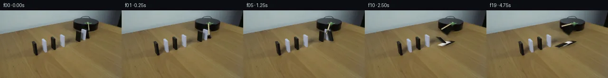

![首帧]()

Round 00
2026-11-04T22:46:03.812610+00:00像素候选变化代码 +277/−0inspection 更新
pixels 0ba85904da962c73 · code f21c1f5e38c9ec44
查看本轮 generate.py 真实 diff
--- previous/generate.py
+++ current/generate.py
@@ -0,0 +1,277 @@
+#!/usr/bin/env python3
+"""Generate the 20-frame locked-camera domino demonstration.
+
+The supplied photograph is the sole scene source. Static pixels are retained;
+small source masks are locally inpainted only where the arm/dominoes move, then
+the arm and falling pieces are redrawn with image-space rigid-body geometry.
+"""
+
+from pathlib import Path
+import math
+
+import cv2
+import numpy as np
+from PIL import Image, ImageDraw, ImageFilter
+
+from artifact_io import save
+
+
+ROOT = Path(__file__).resolve().parent
+W, H = 256, 144
+AA = 4
+
+
+def polygon_mask(points, dilate=0):
+ mask = np.zeros((H, W), np.uint8)
+ cv2.fillPoly(mask, [np.rint(points).astype(np.int32)], 255)
+ if dilate:
+ k = np.ones((dilate * 2 + 1, dilate * 2 + 1), np.uint8)
+ mask = cv2.dilate(mask, k)
+ return mask
+
+
+def make_clean_plates(source):
+ """Prepare fixed plates with the original moving objects locally removed."""
+ # The pale wooden arm. Preserve the green spindle itself (y <= 30).
+ arm = np.zeros((H, W), np.uint8)
+ cv2.line(arm, (184, 30), (186, 53), 255, 5, cv2.LINE_AA)
+ cv2.circle(arm, (184, 50), 4, 255, -1)
+
+ # Visible silhouettes and immediate contact shadows for the near three.
+ d0 = polygon_mask(np.array([
+ (178, 37), (187, 37), (191, 66), (185, 70), (179, 64)
+ ]), 1)
+ d1 = polygon_mask(np.array([
+ (169, 39), (180, 37), (184, 41), (184, 64),
+ (178, 69), (168, 65)
+ ]), 2)
+ d2 = polygon_mask(np.array([
+ (160, 43), (171, 42), (174, 68), (166, 72), (159, 68)
+ ]), 2)
+
+ # Mask a little of the soft floor shadows as each object starts moving.
+ sh0 = polygon_mask(np.array([(178, 63), (193, 63), (195, 69), (181, 73)]), 1)
+ sh1 = polygon_mask(np.array([(168, 62), (187, 62), (190, 69), (172, 73)]), 1)
+ sh2 = polygon_mask(np.array([(158, 66), (178, 66), (180, 73), (161, 76)]), 1)
+
+ def clean(mask):
+ # TELEA is confined to tiny masks, drawing only from this photograph.
+ return cv2.inpaint(source, mask, 3, cv2.INPAINT_TELEA)
+
+ mask_d0 = cv2.bitwise_or(arm, cv2.bitwise_or(d0, sh0))
+ mask_d01 = cv2.bitwise_or(mask_d0, cv2.bitwise_or(d1, sh1))
+ mask_all = cv2.bitwise_or(mask_d01, cv2.bitwise_or(d2, sh2))
+ return {
+ "arm": clean(arm),
+ "d0": clean(mask_d0),
+ "d01": clean(mask_d01),
+ "all": clean(mask_all),
+ }
+
+
+def draw_scaled_polygon(draw, points, fill):
+ draw.polygon([(round(x * AA), round(y * AA)) for x, y in points], fill=fill)
+
+
+def draw_scaled_line(draw, points, fill, width):
+ draw.line([(round(x * AA), round(y * AA)) for x, y in points],
+ fill=fill, width=round(width * AA), joint="curve")
+
+
+def composite_arm(frame, angle_deg, source):
+ """Draw the clockwise wooden arm and restore the photographed green hub."""
+ layer = Image.new("RGBA", (W * AA, H * AA), (0, 0, 0, 0))
+ draw = ImageDraw.Draw(layer)
+ hub = np.array((182.7, 27.4), np.float64)
+ a = math.radians(angle_deg)
+ end = hub + np.array((25.2 * math.cos(a), 24.1 * math.sin(a)))
… diff truncated; 190 more lines …